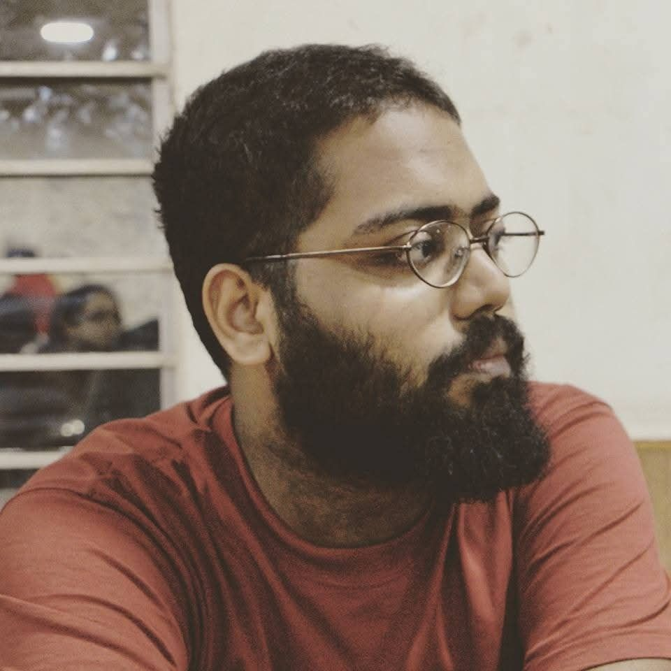
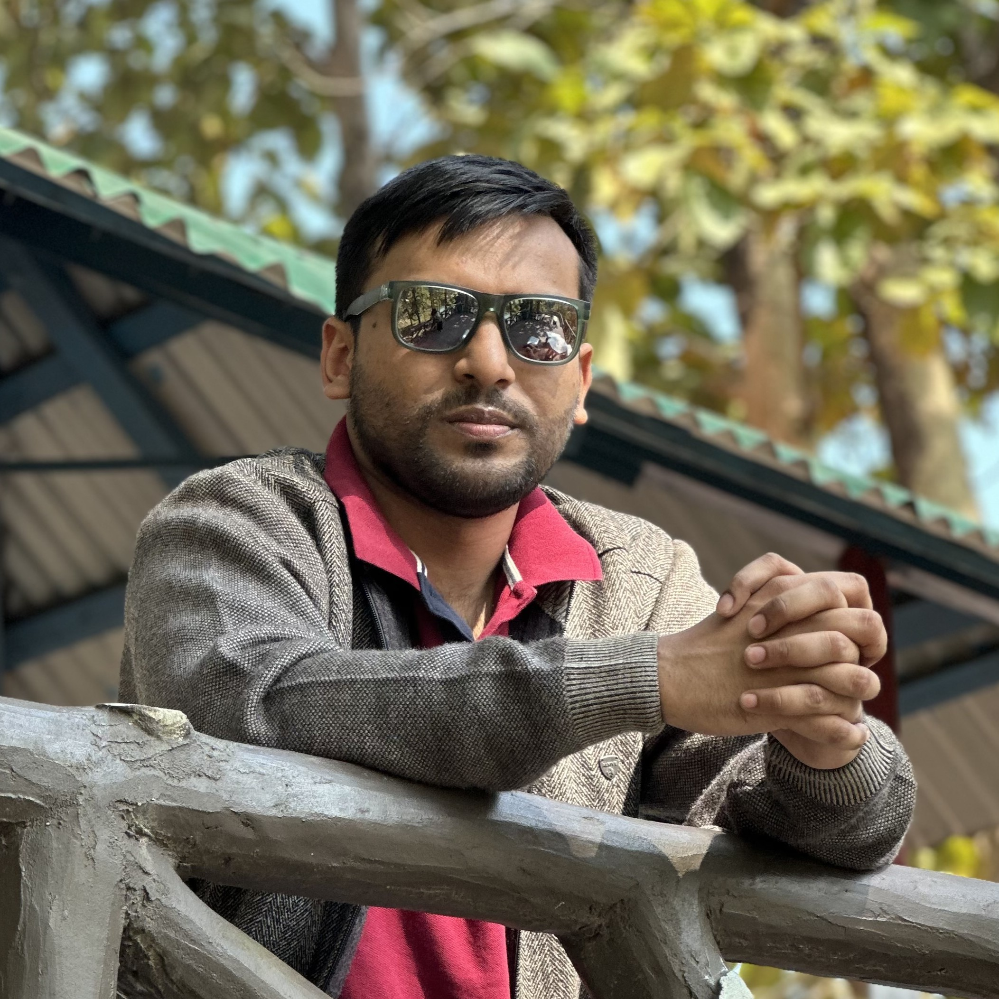

Our Team

Abrar Jahin
Researcher
Ph.D. in Naval Architecture & Marine Engineering
Co-founder of the DRAFT Lab, watercraft design specialist, in pursuit of bridging the gap between theory and application.
View Profile

Rounak Saha Niloy
Researcher
Ph.D Student in Mechanical and Manufacturing Engineering
Co-founder of the DRAFT Lab. Focuses on data-driven design and automated manufacturing of composite structures, combining naval architecture with machine learning, CFD, and optimization techniques.
View Profile
MS
Md. Shariful Islam
Researcher
M.Sc. in Naval Architecture
Co-founder of the DRAFT Lab, marine and offshore engineering researcher, committed to driving innovation through data-driven design and interdisciplinary insight.
View Profile

Imon Ghosh Pranta
Researcher
B.Sc. in Naval Architecture & Marine Engineering
CFD fanatic and recent Naval Architecture graduate exploring the synergy of simulation, programming, and machine learning. Literature lover and open-source explorer.
View Profile

Md. Ariful Islam
Researcher
B.Sc. in Naval Architecture & Marine Engineering
A recent BUET graduate specializing in Machine Learning, CFD and Naval Architecture. Enthusiastic about Heat Transfer, Fluid Mechanics, Optimization and Renewable Energy, with a commitment to fostering sustainable innovations and their pragmatic implementation in these domains.
View Profile